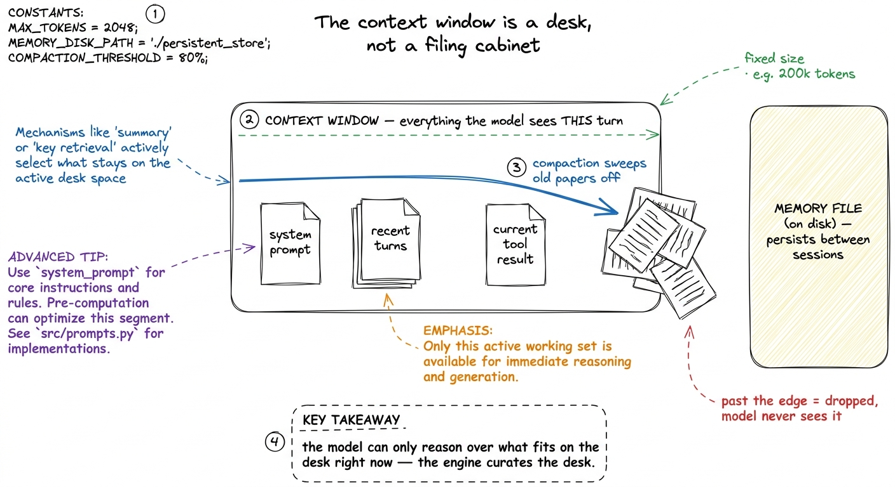
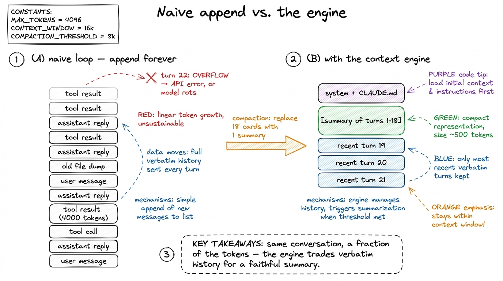
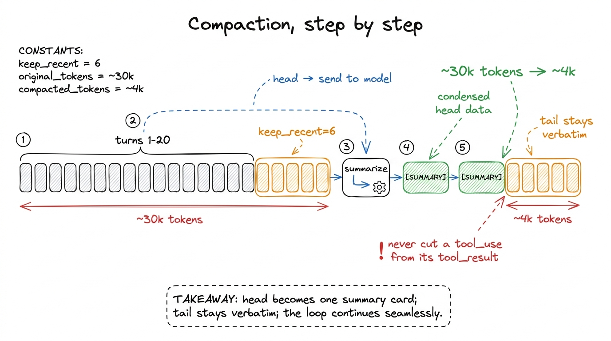
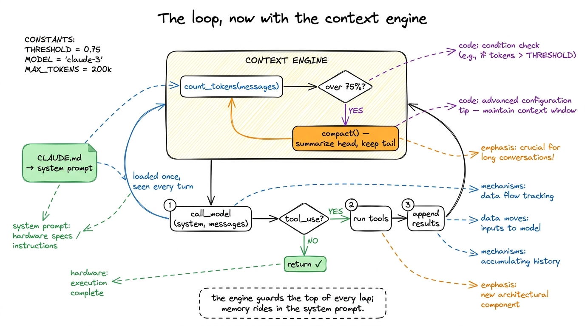

Build: the context engine BUILD
By now the loop from your first bare harness works — until it doesn't. Point it at a real task and let it run. Somewhere around the twentieth lap, one of two things happens. Either the API rejects your call outright because the messages array has outgrown the model's context window, or — more insidiously — the model quietly gets worse, forgetting what you asked ten turns ago, re-reading files it already read, contradicting a decision it made at the start. The agent didn't break. It ran out of the one resource nothing else can substitute for: room in the context window.
This chapter is where we fix that. We are building Layer 3, the context engine — the subsystem that decides, on every single lap, what the model gets to see. It has two jobs. First, keep the running conversation under budget by compacting it before it overflows. Second, give the agent a persistent memory so it starts every session already knowing your project, and assemble that memory into the system prompt. We wire both directly into the loop we already have. By the end, the same agent that choked at turn twenty will survive a session of two hundred.

figure rendering · The context window is a fixed-size desk, not an infinite cabinet. TheWhy this is the scarcest resource in the system
A model has a hard limit on how many tokens it can attend to in one call — call it the context window. But the ceiling is not really the problem. The problem is that quality degrades long before you hit the ceiling. Anthropic's guidance on context engineering puts it bluntly: context is a finite resource with diminishing returns, and the goal of the whole discipline is to find "the smallest possible set of high-signal tokens that maximize the likelihood of some desired outcome."1 This is why context engineering is its own craft, distinct from prompt engineering — see prompt vs context vs harness. Prompt engineering asks "what do I say once"; context engineering asks "what does the model see every turn", which is a curation problem, not a wording problem.
Every token you spend on a stale tool result is a token stolen from the model's attention. A raw agent loop never cleans up after itself: every file it reads, every command it runs, every intermediate thought gets appended to messages forever. The engine's job is to be the thing that does clean up — deciding what is high-signal and worth keeping, and what is noise that can be summarized or dropped.

figure rendering · Naive loops append until they overflow. The engine replaces a long verJob one: count the tokens each turn
You cannot manage a budget you don't measure. So the very first thing the engine does, every lap, is count how many tokens the current messages array will cost. The honest way is to ask the provider — most expose a token-counting endpoint so you get the exact number the model will see, tokenizer and all.2 Anthropic's SDK has a count_tokens call that mirrors the real tokenizer. A cheap local approximation is len(text) / 4 characters-per-token, which is fine for a rough guard but will drift on code and non-English text. Use the real counter when the decision to compact is expensive to get wrong.
import anthropic
client = anthropic.Anthropic()
MODEL = "claude-sonnet-4-6"
CONTEXT_LIMIT = 200_000 # the model's hard ceiling
COMPACT_THRESHOLD = 0.75 # start compacting at 75% full — don't wait for the wall
def count_tokens(system, messages, tools):
r = client.messages.count_tokens(
model=MODEL, system=system, messages=messages, tools=tools,
)
return r.input_tokensNotice we compact at 75%, not 100%. Two reasons. First, the model's output also has to fit alongside the input, so the usable budget is smaller than the raw ceiling. Second — and this is the real reason — quality sags in the upper reaches of the window, so we want to act while there's still headroom, not scramble at the edge. The threshold is a dial you tune per model and per task.
Job two: compact when over budget
Compaction is the move that makes long sessions possible. When the token count crosses the threshold, we take the older stretch of the conversation, ask the model to summarize it, and replace those many messages with that one summary. Recent turns stay verbatim — they're the working set — while the distant past collapses into a dense recap.
The art is entirely in what the summary preserves. Anthropic's advice is to "maximize recall first, then improve precision": capture everything that could matter — decisions, files touched, the goal, open problems — then tighten to cut the redundant. What you must never lose is the load-bearing state: the task, the constraints, the choices already committed to. What you can happily drop is the verbatim file dump the model read once and has already used.
COMPACTION_PROMPT = """You are compacting an agent's conversation to save context.
Write a dense summary that preserves, in this priority order:
1. The user's original goal and any hard constraints.
2. Decisions made and WHY (architecture, file choices, approaches rejected).
3. Files created or edited, and their current state.
4. What is done, what is in progress, and the immediate next step.
Drop verbatim file contents, tool logs, and idle chatter — keep the facts, not the transcript.
Write it as notes to your future self, not prose."""
def compact(messages, keep_recent=6):
head, tail = messages[:-keep_recent], messages[-keep_recent:] # summarize head, keep tail
summary = client.messages.create(
model=MODEL, max_tokens=2048,
system=COMPACTION_PROMPT,
messages=head + [{"role": "user",
"content": "Summarize the conversation above per your instructions."}],
)
summary_text = summary.content[0].text
return [{"role": "user",
"content": f"[SUMMARY OF EARLIER SESSION]\n{summary_text}"}] + tailWe split the array into a head we summarize and a tail of the last few turns we keep untouched. The keep_recent window matters: the model needs the immediate context — the last tool result, the current sub-task — in full fidelity, because a summary is lossy and you don't want to lose the thread you're actively pulling on.3 Real harnesses guard the boundary carefully: you must not split a tool_use block from its matching tool_result, or the API rejects the array as malformed. A production compactor snaps keep_recent to a clean turn boundary. We elide that bookkeeping here to keep the idea legible. The old head — possibly dozens of messages and tens of thousands of tokens — becomes a single tidy note. This is the tool-result-clearing and summarization pattern that Claude Code and pi both use under the hood; the summary literally becomes the new opening of the conversation.

figure rendering · Compaction in five steps: keep the recent tail verbatim, summarize theJob three: persistent memory — load CLAUDE.md at the start
Compaction keeps a single session alive. But your agent should also carry knowledge across sessions — the project's conventions, the commands to run tests, the things you'd otherwise re-explain every morning. That's what a memory file is for. Claude Code calls its convention CLAUDE.md; pi and Cursor have their own equivalents. It is nothing more exotic than a markdown file that lives in the repo and gets loaded into context at the start of every run, before the user has even typed anything.
This is the structured note-taking idea from Anthropic's playbook, turned into a first-class part of the harness: durable knowledge lives on disk, outside the volatile context window, and gets pulled in on demand. The agent can also write to it — appending a hard-won fact ("the integration tests need DATABASE_URL set") so the next session starts smarter than this one ended.
import pathlib
def load_memory(project_dir="."):
"""Load persistent project memory, if present."""
for name in ("CLAUDE.md", "AGENTS.md", ".agent/memory.md"):
p = pathlib.Path(project_dir) / name
if p.exists():
return p.read_text()[:8000] # cap it — memory is a briefing, not a novel
return ""We cap the memory at a few thousand tokens on purpose. A memory file that grows without bound just recreates the overflow problem one level up — it should be a briefing, the high-signal facts a new teammate would need, not a data dump.4 This is the same "smallest set of high-signal tokens" principle applied to memory. A good CLAUDE.md is ruthlessly curated: build commands, code conventions, gotchas, and pointers to where things live — not the whole architecture doc, which the agent can read on demand with its file tools.
Job four: assemble the system prompt
The system prompt is the agent's standing identity and rulebook, and it is assembled, not hardcoded. The engine stitches together a few sections every run: who the agent is and how it should behave, the loaded memory file, and often a snapshot of the environment (working directory, OS, today's date). Anthropic recommends giving this structure with clear headers or XML tags so each part is unambiguous.
def build_system_prompt(project_dir="."):
identity = (
"You are a coding agent operating in a terminal. Work in small, verifiable steps. "
"Prefer reading before editing. Explain what you are about to do, then do it."
)
memory = load_memory(project_dir)
env = f"<env>\ncwd: {pathlib.Path(project_dir).resolve()}\nos: {__import__('platform').system()}\n</env>"
parts = [identity, env]
if memory:
parts.append(f"<project_memory>\n{memory}\n</project_memory>")
return "\n\n".join(parts)That <project_memory> block is the payoff of the whole persistence story: on turn zero, before the user says a word, the agent already knows your build command and your conventions. It behaves like a colleague who read the onboarding doc, not a stranger who needs everything re-explained.
Wiring Layer 3 into the loop
Now we thread all four jobs into the loop from the last chapter. The changes are small and surgical — that's the point. The engine sits at the top of each lap, guarding the model call.
def run_agent(user_request, project_dir="."):
system = build_system_prompt(project_dir) # memory loaded once, up front
messages = [{"role": "user", "content": user_request}]
while True:
# --- context engine: guard the budget before every call ---
used = count_tokens(system, messages, TOOLS)
if used > CONTEXT_LIMIT * COMPACT_THRESHOLD:
messages = compact(messages) # collapse the history, keep the tail
reply = call_model(system, messages, TOOLS) # 1. ask the model
messages.append({"role": "assistant", "content": reply.content})
if reply.stop_reason != "tool_use": # 2. no tool? we're done
return text_of(reply)
tool_results = []
for block in reply.content: # 3. run every tool it asked for
if block.type == "tool_use":
out = run_tool(block.name, block.input)
tool_results.append({
"type": "tool_result",
"tool_use_id": block.id,
"content": str(out),
})
messages.append({"role": "user", "content": tool_results}) # 4. feed results back
# 5. loop — and the engine will re-check the budget at the topThree lines of change and the loop is transformed. The system prompt is built once, carrying the memory file into every turn. And before each model call, the engine counts tokens and compacts if we've crossed the threshold. The loop itself — the beating heart from Layer 1 — is otherwise untouched. That is the discipline of layering: each new capability slots in without rewriting what came before.

figure rendering · The Layer 1 loop with the context engine bolted on: token-check-and-coWatching it survive a long session
Here is the difference, concretely. Give the agent a genuinely long task — "audit every file in src/, note issues, and write a report" — on a directory with forty files.
Without the engine, the loop reads file after file, appending each 3,000-token dump to messages. Around file eighteen the array crosses 200k tokens and the next call_model throws a hard error. The session is dead, and everything the agent learned in the first seventeen files dies with it.
With the engine, watch turn nineteen. The token count crosses 150k, compact() fires, and the seventeen files' worth of raw dumps and reasoning collapse into a single summary: "Audited 17 of 40 files. Issues found: [list]. Next: src/handlers/." The array drops from ~160k tokens back to ~12k. The agent reads on, compacts again near file thirty-six, and finishes the report. Same model, same loop — but now it survives, because the engine kept the desk clear the whole way through.5 Compaction is lossy by nature: a fact the summarizer judged unimportant is gone. This is exactly why the persistent memory file matters — anything that must never be forgotten belongs in CLAUDE.md or a notes file the agent writes to, not in the volatile conversation that compaction will eventually crush.
What it still misses
We have a harness that keeps its head over a long session and starts each one already knowing your project. That is Layer 3 done. But two honest gaps remain.
First, we still load everything eagerly — the whole memory file, whole files when the model reads them. The more advanced move is just-in-time retrieval: keep lightweight references and pull content only when needed, so the agent explores the codebase the way you do rather than swallowing it whole. That's a refinement of this same engine, and a natural next study.
Second — and this is the bridge to the next layer — our compaction and memory live entirely in process memory and one flat file. If the process crashes mid-task, the current uncompacted conversation is gone. Compaction survives a long run; it does not survive a dead run. Making the whole agent state durable — checkpointed to disk so a killed process can replay instead of redo — is exactly Layer 4, durability, which is where we head next.